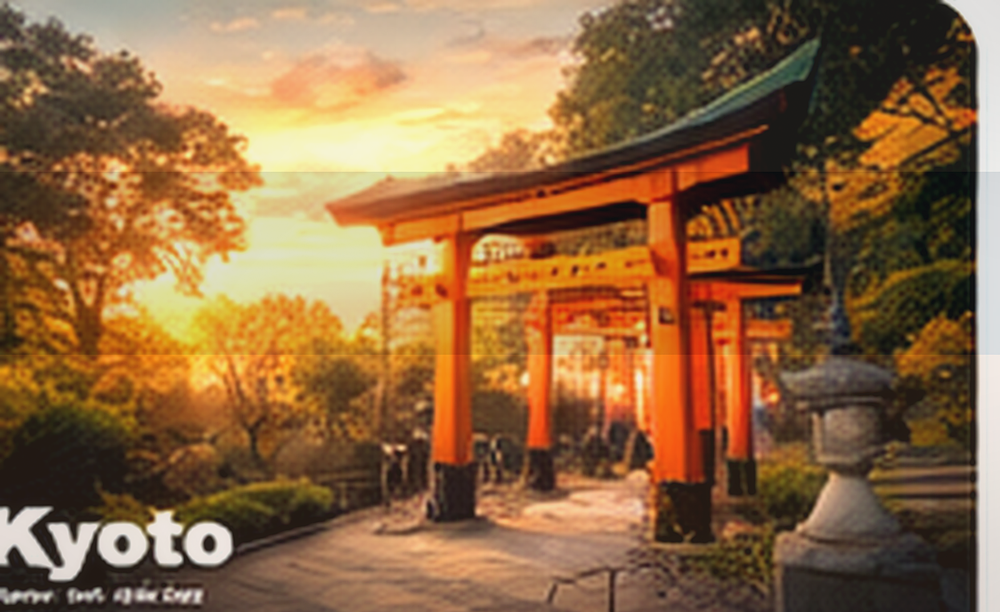

Japan City Guide
Kyoto
Kyoto works best when the trip is slower than your ambition.
Temple morningsRiver walksWooden streetsSlow cafés

Why it worksA better Kyoto trip usually means doing less in one day.
Where to focus
Pick districts that match your energy instead of trying to touch everything.
Higashiyama
Classic Kyoto atmosphere with lanes, slopes, and strong early-morning payoff.
Arashiyama
Best when treated as a half-day mood area, not a rushed checklist stop.
Demachiyanagi & Okazaki
Useful for quieter museum, river, and local-life texture.
Food and local rhythm
What shapes the feel of the city more than a list of famous places.
- Morning coffee before temples to avoid rushed starts
- Simple lunch sets near quieter streets rather than tourist clusters
- Tea and dessert stops that become part of the pacing, not just snacks
Budget feel
Kyoto can feel premium quickly, so balance standout meals with simpler days built around walks and cafés.
Sample rhythm for Kyoto
A realistic way to think about pacing before you generate a custom plan.
Sample itinerary
Kyoto 2N3D Slow Trip
Day 1 · Arrival with atmosphereSettle in, explore one historic lane, and keep the evening light.
Day 2 · One anchor, one mood zoneTemple or garden in the morning, slower river or café district later.
Day 3 · Gentle last morningTea, small shop browsing, and departure without forcing another long route.
Local tips
The small adjustments that make the city feel easier and more intentional.
- Start earlier than you think—Kyoto rewards mornings more than late afternoons.
- Do not try to combine distant temples just because they are famous.
- Rainy days can actually improve the mood in Kyoto if you pivot toward cafés, crafts, and indoor culture.
Keep in mind
Tiny prep choices that improve the trip immediately.
- Aim for one major zone per half-day.
- Wear shoes you can stay in for long walks.
- Book standout dinner spots ahead in peak seasons.